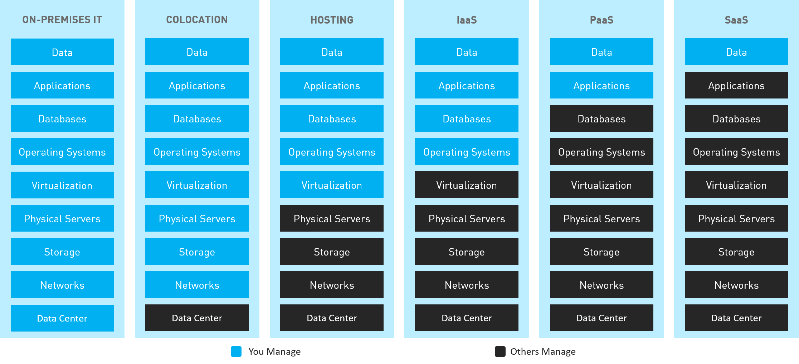

Les datacenters peuvent comporter différents niveaux de sécurité, de latence et de résillience.
Les datacenters hiérarchisés autorisent un stockage hiérarchique des données, dans lequel les
fichiers et les données auxquels les utilisateurs accèdent le plus, ou qui doivent être très
performants, peuvent résider sur un niveau, tandis que les données moins utilisées résident sur
un autre niveau. Dans les modèles SaaS (Software As A Service) de Cloud public, les niveaux ayant
une faible latence sont généralement plus chers que ceux qui ont latence élevée.
Le niveau offrant la latence la plus faible et l'accès le plus rapide réside généralement le plus
près des utilisateurs, à un emplacement où ceux-ci peuvent facilement interagir avec lui
quotidiennement.
Le niveau le plus rapide est nommé niveau zéro. Les entreprises spécialisées par
exemple dans les services financiers ou la recherche médicale et utilisant des systèmes informatiques
hautes performances pour l'analyse du Big Data sont des utilisateurs fréquents du stockage de niveau zéro.
Les niveaux de stockage moins performants peuvent faire office d'instance de secours pour le niveau
principal ou servir de stockage pour les données moins souvent utilisées. Les données archivées peuvent
résider dans le niveau de stockage le plus bas et le moins cher, où une latence élevée n'est pas aussi
nécessaire.
